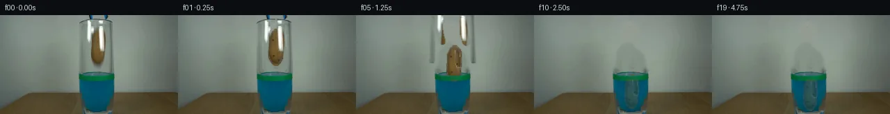

![首帧]()

Round 00
2026-11-05T09:54:23.523629+00:00像素候选变化代码 +288/−0inspection 更新
pixels 35df274bb54b1848 · code 30b32c845e29a499
查看本轮 generate.py 真实 diff
--- previous/generate.py +++ current/generate.py @@ -0,0 +1,288 @@ +#!/usr/bin/env python3 +"""Generate the PixelWorld-Text continuation using deterministic local pixel operations.""" + +from pathlib import Path + +import cv2 +import numpy as np +from PIL import Image, ImageDraw, ImageFont + +import artifact_io + + +ROOT = Path(__file__).resolve().parent +H, W = 144, 256 + + +def soft_mask(binary: np.ndarray, sigma: float = 0.65) -> np.ndarray: + """Return a lightly feathered float mask while keeping a solid interior.""" + binary = binary.astype(np.float32) + if sigma <= 0: + return binary + blurred = cv2.GaussianBlur(binary, (0, 0), sigma) + return np.maximum(binary * 0.96, blurred).clip(0, 1) + + +def composite(dst: np.ndarray, rgb: np.ndarray, alpha: np.ndarray) -> np.ndarray: + a = alpha[..., None].astype(np.float32) + return np.clip(dst.astype(np.float32) * (1 - a) + rgb.astype(np.float32) * a, 0, 255).astype(np.uint8) + + +def line_mask(points, thickness): + m = np.zeros((H, W), np.uint8) + cv2.polylines(m, [np.asarray(points, np.int32)], False, 255, thickness, cv2.LINE_AA) + return m + + +def make_tool_masks(): + """Measured masks for the two blue-black/reflective grabber halves.""" + left = np.zeros((H, W), np.uint8) + right = np.zeros((H, W), np.uint8) + + # Blue upper stems and reflective inner gripping jaws. + cv2.rectangle(left, (126, 0), (134, 7), 255, -1) + cv2.rectangle(right, (148, 0), (156, 7), 255, -1) + left = np.maximum(left, line_mask([(130, 0), (129, 7), (128, 20), (128, 38), (132, 53)], 8)) + right = np.maximum(right, line_mask([(153, 0), (151, 7), (146, 15), (146, 39), (150, 54)], 9)) + + # Dark outer members visible against the gray-green wall. + left = np.maximum(left, line_mask([(129, 5), (121, 7), (118, 11), (118, 47), (117, 81)], 6)) + right = np.maximum(right, line_mask([(153, 5), (158, 8), (159, 26), (160, 81)], 6)) + + # The small top bridge is split at the motion hinge. + cv2.rectangle(left, (121, 5), (140, 10), 255, -1) + cv2.rectangle(right, (141, 5), (159, 10), 255, -1) + return left, right + + +def make_potato(source: np.ndarray): + """Build a full potato surface from visible source skin and local texture completion.""" + poly = np.array([ + (140, 20), (145, 21), (149, 25), (151, 32), (151, 43), + (150, 53), (150, 61), (147, 68), (143, 73), (138, 72), + (134, 69), (131, 63), (130, 55), (131, 45), (131, 35), + (134, 27), (137, 22), + ], np.int32) + hard = np.zeros((H, W), np.uint8) + cv2.fillPoly(hard, [poly], 255, cv2.LINE_AA) + alpha = soft_mask(hard > 80, 0.7) + + yy, xx = np.mgrid[0:H, 0:W] + visible_skin = ( + (hard > 0) & (source[..., 0] > source[..., 1] + 4) + & (source[..., 1] > source[..., 2] + 8) + & (source.mean(2) < 145) + ) + + # Analytic brown base with the source's vertical illumination and rounded shading. + cx = 140.5 + lateral = np.clip(1 - np.abs(xx - cx) / 12.0, 0, 1) + vertical = np.clip((yy - 20) / 53.0, 0, 1) + base = np.empty_like(source, dtype=np.float32) + base[..., 0] = 83 + 30 * lateral + 4 * (1 - vertical) + base[..., 1] = 61 + 25 * lateral + 3 * (1 - vertical) + base[..., 2] = 30 + 18 * lateral + + # Deterministic low/high frequency skin mottling. + rng = np.random.default_rng(143) … diff truncated; 201 more lines …